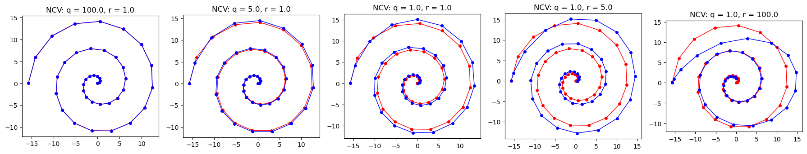
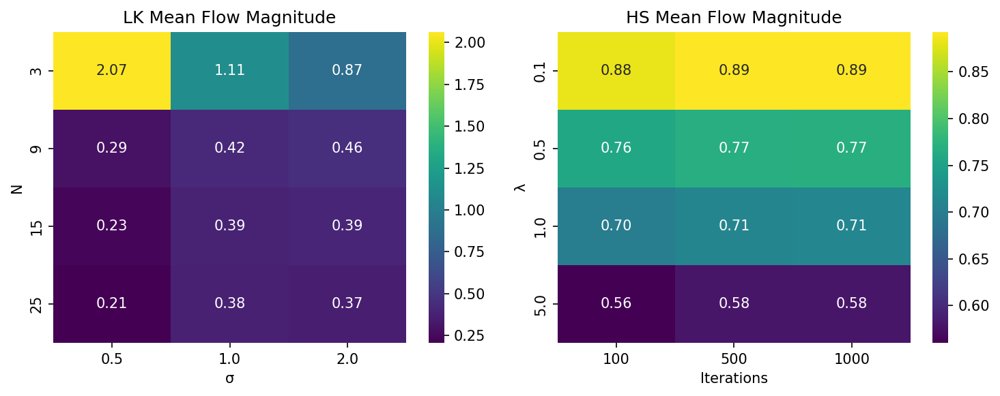

Classical Visual Tracking
Optical flow, mean shift, correlation filters, and Kalman and particle filters, written from scratch
TL;DR: Four small trackers, each with a parameter study. They are the baseline I use to reason about what modern trackers add.
Correlation filter
A MOSSE-style tracker learns a filter in the Fourier domain whose response peaks on the target, and blends in a new filter each frame at rate α. With no update the filter goes stale. Raising α cut failures on the benchmark sequences from 485 to 282 while overlap stayed near 0.42.
| Tracker | Average overlap | Total failures |
|---|---|---|
| Static box (baseline) | 0.35 | 433 |
| Normalised cross-correlation (baseline) | 0.55 | 430 |
| Correlation filter, α = 0 | 0.45 | 485 |
| Correlation filter, α = 0.025 | 0.41 | 347 |
| Correlation filter, α = 0.05 | 0.41 | 321 |
| Correlation filter, α = 0.10 | 0.42 | 303 |
| Correlation filter, α = 0.15 | 0.43 | 298 |
| Correlation filter, α = 0.20 | 0.41 | 282 |
Kalman filter

The same constant-velocity model then drives a particle filter with a colour-histogram appearance model, 150 particles and a Bhattacharyya likelihood.
Optical flow

Mean shift
A colour-histogram tracker that climbs the similarity surface by mean shift, with sweeps over kernel size, histogram bins and the stopping threshold.
Next
Planned: run the correlation filter under controlled corruptions of the input, such as blur, noise and brightness change at increasing strength, and measure where it starts to fail.